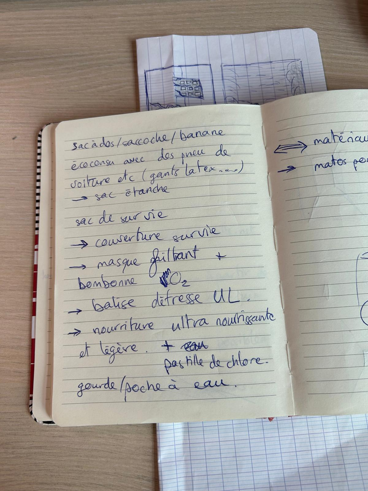
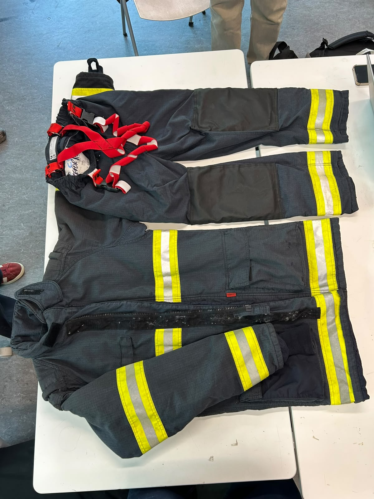
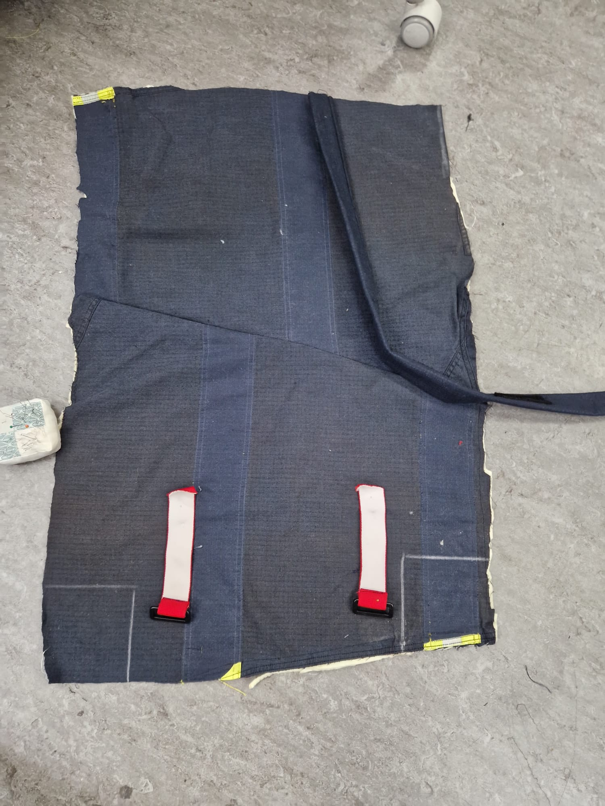
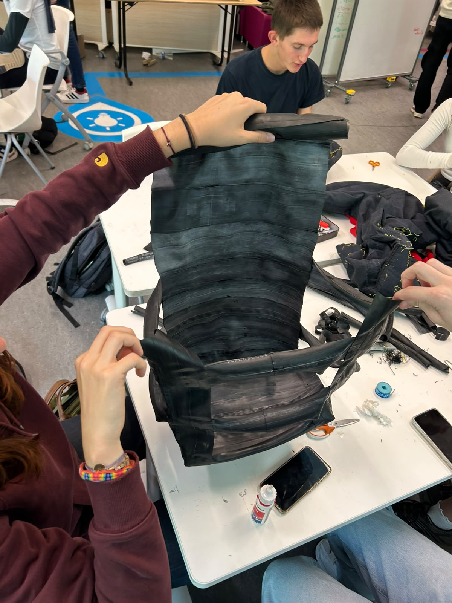
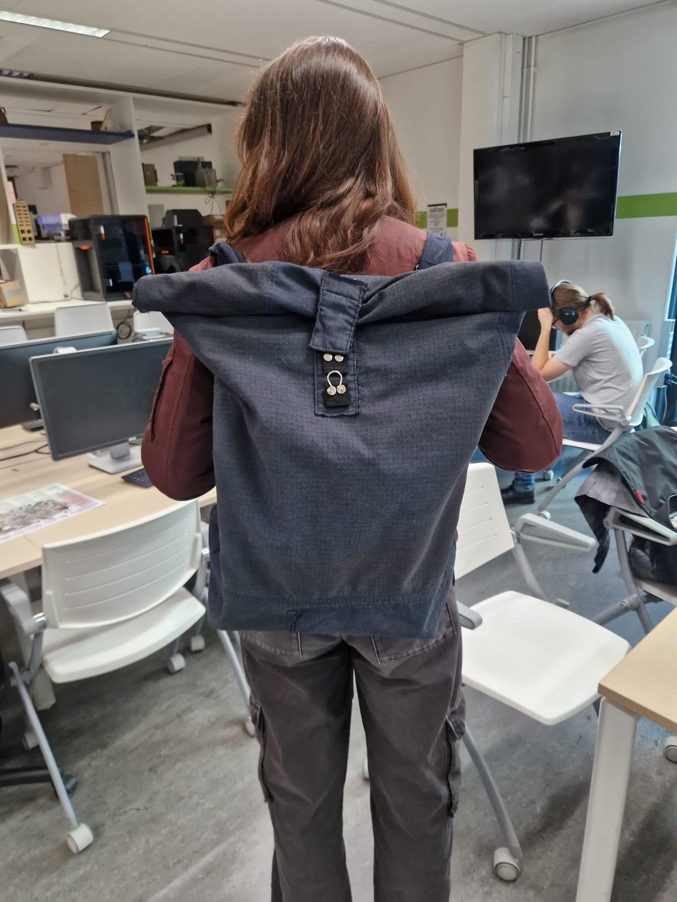

Un sac d'urgence conçu à partir de matériaux professionnels en fin de vie,
avec un passeport numérique et un mode urgence accessible en un scan.
1 sac sur 4 distribué à des ONGs mondiales.
Scannez le QR code pour accéder au kit, aux consignes et au passeport environnemental.
02 — MODE URGENCE
Que se passe-t-il ?
● ASSISTANCE RAPIDE
03 — PASSEPORT ENVIRONNEMENTAL
La seconde vie, mesurée.
ID #02481
♻
MATIÈRES RÉEMPLOYÉES2,0 kg
de matières détournées du rebut pour ce prototype.
Part réemployée85%
TEXTILE
Ancienne tenue pompier
Textile technique valorisé pour la structure extérieure.
1,2 kg
CAOUTCHOUC
Pneu usagé
Utilisé pour les renforts, le fond et certaines poignées.
0,8 kg
CYCLE DE VIE
01
CollecteMatériaux professionnels en fin de vie
02
TransformationDécoupe, assemblage, prototypage
03
UtilisationKit d'urgence connecté
04
RetourRéemploi ou recyclage en fin de vie
04 — HISTOIRE & CONCEPTION
Du besoin au prototype.
Deux semaines de travail en équipe pour transformer une idée de résilience
en un concept concret, circulaire et connecté.
01
DÉBUT DU PROJET · SEMAINE 1
Identifier le problème
Nous partons d'un constat simple : en situation d'urgence,
le matériel doit être accessible, fiable et immédiatement
compréhensible. En parallèle, nous cherchons à réduire
l'impact environnemental de sa fabrication.
BesoinRésilienceÉcoconception
02
SEMAINE 1 · IDÉATION
Imaginer la solution
Le groupe explore plusieurs pistes avant de converger vers
RESCUE+ : un sac d'urgence pensé autour de matériaux
professionnels en fin de vie, accompagné d'une identité
numérique accessible par QR code ou NFC.
BrainstormingConceptQR / NFC
03
SEMAINE 1 → 2 · CONCEPTION
Concevoir et prototyper
Nous travaillons sur la forme du sac, les matériaux,
l'organisation du kit et les différents scénarios d'urgence.
Les premières maquettes permettent de tester, corriger et
faire évoluer le projet collectivement.
DesignPrototypeTests
04
FIN DU PROJET · AUJOURD'HUI
Donner une dimension numérique
Le prototype devient une expérience complète : vérification
du matériel, mode urgence, passeport environnemental et
réflexion sur le modèle économique. Le site que vous
consultez rassemble cette vision.
DigitalImpactBusiness
CARNET DE CONCEPTION
Les coulisses du projet.
09 VISUELS

Premières pistes

Matériaux
Première forme
Croquis
Détails techniques

fabrication
RESCUE+

Première conception

Prototype final
BUSINESS MODEL
Plus qu'un sac : une solution de résilience.
RESCUE+ peut être déployé auprès des particuliers, entreprises, écoles et collectivités.
B2CB2BCollectivitésÉconomie circulaire
RESCUE+ HOME70 €Kit individuel
RESCUE+ WORK60 €À partir de 50 unités
RESCUE+ CITYSur devisDéploiement territorial
SIMULATION DE SCAN
RESCUE+ #02481 détecté
Identité numérique chargée. Vous pouvez maintenant vérifier le kit, accéder au mode urgence et consulter son passeport environnemental.